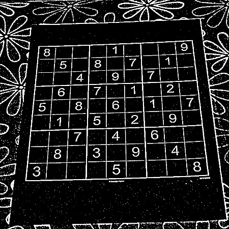
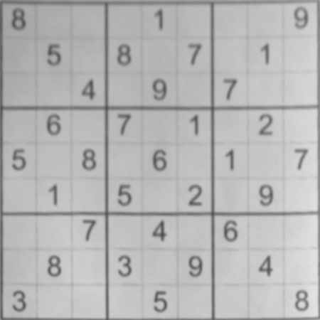
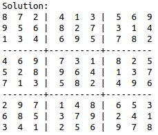

Photograph
Begin with an image of a printed Sudoku grid.
IMAGE PROCESSING · DIGIT RECOGNITION · BACKTRACKING
A look at how a photographed Sudoku puzzle becomes a grid of numbers—and a solved board.
Try the sample puzzle01 / THE WORKBENCH
Start with the puzzle from the repository, or enter your own clues. Use digits 1–9; leave other cells blank.
Load the sample or edit a cell, then solve.
02 / THE METHOD
The original workflow processes an image, recognizes digits with a CNN, and solves the resulting puzzle.
Begin with an image of a printed Sudoku grid.

Threshold the image and identify the puzzle contour.

Correct perspective and divide the grid into cells.

Read digits with the trained model, then solve the grid with backtracking.
03 / ABOUT THE STUDY
This university-era repository explores extracting and solving Sudoku from a photo using OpenCV, a CNN trained for digit recognition, and a backtracking solver. This page recreates the solving step in JavaScript so you can try it without a server.
The repository README credits the original SolveSudoku project by aakashjhawar ↗. The images and sample puzzle shown here come from that codebase.